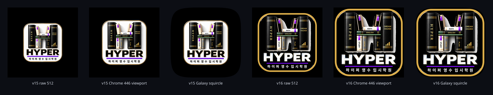

Chromium MASKABLE_ICON_PADDING_RATIO = ((4/5)/(66/108)-1)/2.
For a 512 source: padding=79, padded=670, AdaptiveIconDrawable viewport=(670*2/3)|0 = 446, origin=33.
Galaxy One UI masks that 446px crop. This is not a guessed 56.6 / 70 / 80 / 90% scale.
